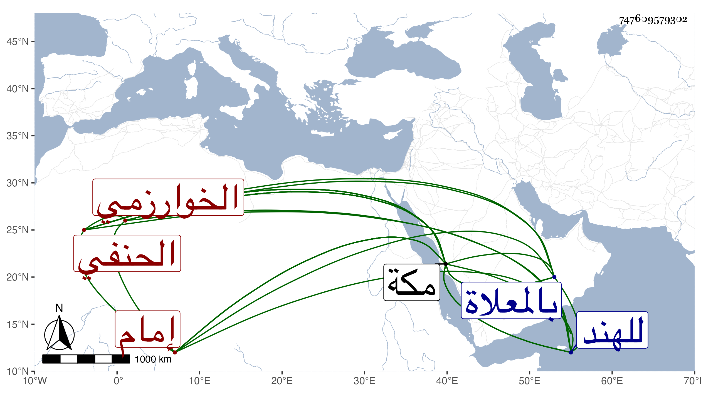

0902Sakhawi.DawLamic.ITO20230111-ara1.EIS1600.747609579302
Biography ID: 747609579302
318
محمد بن إسحاق الشمس الخوارزمي الحنفي نزيل مكة ونائب إمام مقام الحنفية . كان فاضلا في العربية ومتعلقاتها وغير ذلك كثير التصدي للإشعال والإفادة والنظر والكتابة وكأنه أخذ العربية عن صهره إمام الحنفية الشمس المعيد والد الشهاب أحمد وكان ينوب عنهما في الإمامة غيبة وحضورا سنين كثيرة وجمع في فضائل مكة والكعبة شيئا استمد فيه من تاريخ الأزرقي وكتب المناسك وكان يرسم صفة الكعبة والمسجد في أوراق ويهديها للهنود وغيرهم بل سافر للهند طلبا للرزق ، كل ذلك مع دين وخير وسكون وانجماع عن الناس . مات في سلخ ربيع الأول سنة سبع وعشرين ودفن بالمعلاة بكرة يوم الجمعة ، وهو في عشر الستين ظنا أو جازها . قاله الفاسي في مكة .
